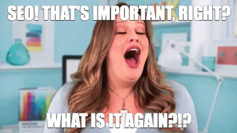

-
Home
- Blog list
Blog Details

SEO is known to be the most integral service in the digital marketing space. This service works brilliantly for various online businesses. The site with the most links, most pages, or more visitors is not necessarily the #1 site. The overall performance of the site determines who is at the top. Without SEO, manipulation becomes dominant. SEO keeps the search results fair. It reduces the ability to forge results to a large extent
Search results are evolving every year to give users more direct, clear, and transparent solutions. Estimated almost 90.88% of pages are invisible in Google without any organic search traffic. Hence SEO is crucial it has the potential to generate 20X more traffic opportunities than PPC on both mobile and desktop. The only online marketing channel when set up correctly, can continue to pay dividends over time.
Users trust SEO, it has helped countless people with commercial intent. For them, it is the only site that helps encouraging positioning. It is the master when it comes to pulling in prospects, and can help boost conversions too. SEO can further all your business goals at a better ROI than most other comparable forms of online marketing.
It helps the webpage secure a higher ranking in results pages. More the clicks, the more traffic your site will generate. SEO also improves user experience, drive qualified traffic to your site without directly paying for it.

Without an SEO strategy, your site could be seriously missing out on opportunities to rank for search queries specific to your business. SEO’s multiple strategies and best practices like on-page SEO helps grow and bring in passive traffic. On-page SEO offers the best ROI with its relatively low-cost and long-term benefits
It is an integral tool to optimize web pages, earn organic traffic, and improve website ranking in the SERP (search engine results pages). It includes optimizing a page’s HTML, internal links, and Metadata (Meta title, Meta description, and keyword density), together with enhancing webpage ranking
To make content engaging, interesting, and relevant, SEO plays an important role. Make sure you have well-written content; accurate keyword placement, focused on the intent. Think about the words users would type to find your pages. Make sure that your site includes those words within it to help you reach and captivate your target audience; improve the usability of your site. It creates a positive, affirmative customer experience. User needs should be the primary motivation for beginning your SEO. Make sure your mobile site is user-friendly, easy to navigate, simple to use, and content that matches largely with your primary site.

By now you must have realized how important the role of SEO is for any website is. Here are a few reasons why it is commonly referred to as “OXYGEN” to your website.

SEO is an excellent guide to on-page optimization so that people can easily find via search engines like Google, Bing, Yahoo, OneSearch, etc. SEO helps visitors on your site find other related content easily. The longer the stay, the better. Make time for updating and improving older SEO content. It includes page views, links, comments (on blog posts and some other types of content), social shares (Facebook likes, tweets, etc.), and conversion rates. Use SEO now and scale your business to tremendous success!